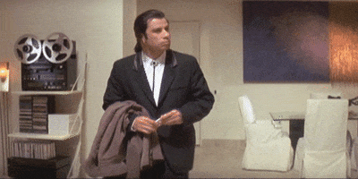

I'm Ian.
a web designer.

Hello.
i love arts and film. A dream you dream alone is only a dream. A dream you dream together is reality..
My Skills.
A Jedi Knight
I am a Jedi, like my father before me.

Pulp Fiction
Pulp fiction gets its name from the paper it was printed on. Magazines featuring such stories were typically published using cheap, ragged-edged paper made from wood pulp. These magazines were sometimes called pulps.